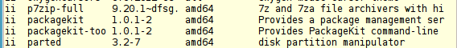

Abb. 1: Das Paket des Spieleklassikers pacman unter
dpkg -l
Die Deinstallation von pacman erfolgt über den Kommandozeilenbefehl
# sudo apt-get remove pacman
wird das pacman-Paket gelöscht, die erzeugten Konfigurationsdateien bleiben aber erhalten. Mit
# sudo apt-get purge pacman
werden auch Diese gelöscht.
Mit dem Befehl
dpkg -l
lassen sich unter Debian alle auf dem Rechner befindlichen Pakete
anzeigen. Bei Benutzung von apt-get purge kann man hier keinen Eintrag
namens pacman lesen können.
Abb. 2: Kein Pacman vorhanden
Quelle